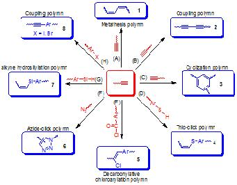

A. Polymerization Methodology Research
As can be seen from Scheme 1, the backbones of the acetylenic polymers are pi-conjugated due to the electronic communications between their electronically unsaturated repeat units. This unique electronic structure has the potential to endow the polymers with novel properties which are very difficult, if not impossible, to access by their congeners of condensation and vinyl polymers with electronic saturation. The prerequisite to realize this attractive potential is to establish versatile processes for synthesizing the polymers (Scheme 2).
Scheme 1. Examples of Polymerization Reactions
Scheme 2. Acetylenic Polymerization Reactions
Representative publication:
[Reviews: Acetylenic Polymers: Syntheses, Structures and Functions Chem. Rev. 2009, 109, 5799; Functional
Hyperbranched Macromolecules Constructed from Acetylenic Triple-Bond Building Blocks Adv. Polym. Sci. 2007,
209, 1; Polymer 2007, 21, 6181]
I. Metathesis polymerization
We have prepared, for example, linear polyenes 1 by metathesis polymerization (Scheme 1, route A). The polymers have been found to exhibit unique electronic, optical, photonic, and biological properties.
Selective publications:
[Reviews: Acc. Chem. Res. 2005, 38, 745; Polym. News 2001, 26, 262]
[Articles: Macromolecules 2011, 44, 2427; Macromolecules 2010, 43, 6014; Macromolecules 2009, 42, 9400; Macromolecules
2009, 42, 2523; Macromolecules 2009, 42, 52; Chem. Commun. 2008, 1094; Macromolecules 2008, 41, 8566; Macromolecules
2008,41, 5997; Macromolecules 2008, 41, 3874; J. Phys. Chem. B 2008, 112, 11227; J. Phys. Chem. B 2008, 112,
8896; J. Phys. Chem. B 2008, 112, 9281]
II. Glaser Coupling
A group of processable hyperbranched polyynes 2 have been successfully synthesized under Glaser–Hay oxidative conditions with promising specialty properties (Scheme 1, route B).
Selective publications:
[Articles: J. Phys. Chem. B 2004, 108, 10645]
III. Polycyclotrimerization
We have also established an efficient transition-metal-catalyzed or metal-free polycyclotrimerization route to hyperbranched polyarylenes 3 with very high degree of branching (up to 0.8), using organic bases or organometallic complexes as catalysts (Scheme 1, route C).
Selective publications:
[Articles: Macromolecules 2010, 43, 4921; Macromolecules 2010, 43, 680; Polym. Chem. 2010, 1, 426; Macromolecules
2009, 42, 7367; Macromolecules 2009, 42, 4099]
IV. Thiol-click polymerization
Taking a transition-metal-catalyzed or metal-free regioselective thio-click approach, sulfur-rich polymers 4 are obtained, which exhibit high light refractivity and photosensitivity (Scheme 1, route D).

Selective publications:
[Articles: Macromolecules 2011, 44, 68; Adv. Funct. Mater. 2010, 20, 1319]
V. Decarbonylative chloroarylation polymerization
Functional PPV derivatives 5 are produced via employing the Rh-catalyzed decarbonylative chloroarylation polymerization with high yields and high molecular weights in a regio- and stereo-selective fashion (Scheme 1, route E).metallic complexes as catalysts (Scheme 1, route C).
Selective publications:
[Articles: Chem. Sci. 2011, 2, 1850]
VI. Azide–alkyne click polymerization
We have developed Cu (I)-catalyzed or metal-free azide–alkyne click reactions into a powerful polymerization technique for the syntheses of processable poly(triazole)s 6 with liner and hyperbranched molecular structures with high regio-regularity (Scheme 1, route F).
Selective publications:
[Reviews: Chem. Soc. Rev. 2010, 39, 2522; Macromolecules 2010, 43, 8693 (Perspective)]
[Articles: J. Mater. Chem. 2011, 21, 4056; ACS Appl. Mater. Interfaces 2010, 2, 566; Adv. Funct. Mater. 2009,
19, 1891; Macromolecules 2009, 42, 1421; Macromolecules 2008, 41, 3808]
VII. Alkyne hydrosilylation polymerization
Functional poly(silylenevinylene)s 7 are synthesized in satisfactory yields with high stereoregularity by Rh-catalyzed alkyne polyhydrosilylations of disilane with diynes (Scheme 1, route G).
Selective publications:
[Articles: Macromolecules 2011, 44, 5977]
VIII. Sonogashira coupling polymerization
We have synthesized hyper-branched poly(aryleneethynylene)s 8 with large optical nonlinearity through a polycoupling route (Scheme 1, route H).
Selective publications:
[Articles: Macromolecules 2006, 39, 1436]
B. Investigation on functionalities of acetylenic polymers
Scheme 3. Multi-Functional Materials from Acetylenic Chemistry
I. Photoconductivity
Of particular interest and technological implication is the enhancement in the electrical conductivity by photoirradiation, commonly known as photoconductivity (PC).
Through systematic studies, Tang’s group has observed the following structureproperty relationships in the photoconductions in the substituted PAs: (i) The substituted PAs containing electrondonating substituents exhibit higher PCs than those with electron-accepting ones. (ii) The PCs are further improved when the electron donors are simultaneously hole-transporters. (iii) The photoconduction becomes even more efficient when the donor substituents are mesogenic and can be packed in an ordered fashion.
Figure 1. Schematic illustration of hybridization of CNT with PAs
Tang and co-workers found that the substituted PAs carrying aromatic pendants could efficiently wrap around CNTs, which dramatically enhance the solubility and, hence, the processability of the nanotubes. Photoreceptor devices fabricated by using the PA/CNT nanohybrids as CGMs displayed dramatically improved PCs, in comparison to those of the devices based on the parent polymers.
Selective publications:
[Macromolecules 2008, 41, 8566; Macromol. Rapid Commun. 2005, 26, 673; Chem. Mater. 2000, 12, 213; ]
II. Liquid Crystallinity
Figure 2. (A) Schlieren textures with disclination strengths of 3/2 and 2 observed after a rotationally agitated PAs has been annealed at 136 oC for 5 min. (B) Induced alignments of PAs bymechanical shearing.
Through careful design of flexible spacers, functional bridges, mesogenic cores, and functional tails, Tang’s group has synthesized a series of highly soluble and thermally stable mono- and disubstituted thermotropic LCPAs. We then have systematically studied their LC behaviors, especially the structure-property relationships in the LCPA systems. The packing arrangements in the mesophases of the LCPAs and their mesomorphic transitions have been found to vary with the molecular structures of their mesogenic pendants.
Selective publications:
[Reviews: Chem. Soc. Rev. 2010, 39, 2522; Macromolecules 2010, 43, 8693 (Perspective)]
[Macromolecules 2009, 42, 2523; J. Polym. Sci., Part A: Polym. Chem. 2008, 46, 2960; J. Am. Chem. Soc. 2005,
127, 7668; J. Polym. Sci., Part B: Polym. Phys. 2004, 42, 1333; Liq. Cryst. 2004, 31, 71; Macromolecules 2004,
37, 6408; Opt. Mater. 2003, 21, 321; Polymer 2003, 44, 8095; Thin Solid Films 2002, 417, 143; Macromolecules
2000, 33, 5027; Chem. Mater. 1998, 10, 3352]
III. Light Emission
The study of luminescence properties of π-conjugated polymers is a hot topic of great current interest. Whereas PA is an archetypal π-conjugated polymer, little work had been done on the development of light-emitting PAs (LEPAs) in the early days, because PA itself is a very poor luminophore. We extended our efforts to explore the possibility of developing efficient LEPA systems. Modifications of molecular structure of PA, such as attachments of the pendant groups with different electronic and steric effects, have been used to tune the conjugation length along the polyene backbone and the electronic interaction between the polymer chains. These approaches have worked well and led to the generation of a large variety of LEPAs with high photoluminescence (PL) yields and good electroluminescence (EL) efficiencies.
Figure 3. Examples of acetylenic polymers with AIE or AIEE features
Aggregation of conjugated polymer chains in the solid state often results in the formation of less-emissive or nonemissive species such as excimers and exciplexes, which partially or completely quench the luminescence of the polymers. This aggregation-caused quenching effect has been a thorny problem in the development of efficient polymer light emitting diodes (PLEDs) because the conjugated polymers are commonly used as thin solid films in the EL devices.
However, we have found a group of chromophores which exhibit an invaluable effect of aggregation-induced emission (AIE): they are virtually nonluminescent when molecularly dissolved in good solvents but become strongly emissive when aggregated in poor solvents or fabricated into solid films. We further incorporated these chromophores into polymers to produce a group of unique polymers showing AIE or AIEE behavior.
Selective publications:
[Macromolecules 2010, 43, 4921; Macromolecules 2009, 42, 9400; J. Phys. Chem. B 2008, 112, 9281; J. Phys.
Chem. B 2008, 112, 11227; Macromolecules 2007, 40, 3159; Polymer 2006, 47, 6642; Macromolecules 2006, 39, 6997;
J. Polym. Sci., Part A: Polym. Chem. 2006, 44, 2487]
IV. Fluorescence Sensing
Luminescent acetylenic polymers have been actively utilized for fluorescence-sensing applications by virtue of their rapid, specific, and sensitive PL responses to a variety of analytes. The attractive attribute that has sparked great interest in the exploration of fluorescent polymers as potential sensors is their extraordinary signal amplification effect.
Figure 4. Explosive detection using AIEE polymers
An example of explosive detection system using an AEE active hyperbranched polymer as the probe is shown. The fluorescence of the nanoaggregates of the polymer suspended in an aqueous mixture is progressively attenuated with the sequential addition of PA. The I–[PA] plot gives a swiftly upward-bending curve rather than a linear line, suggestive of a super-amplification effect. The 3D topological structures of the hyperbranched polymer and its aggregates provide many internal cavities for the explosive molecules and various diffusion paths for the excited states, leading to the extra-ordinary sensing performance. The super-amplification effect has been observed in many AIE and AEE nanoaggregate systems, proving that it is a common feature for the AIE- and AEE-based sensing systems.
Figure 5. Cu2+ and CN- ions sensor based on imidazole-PAs
We have developed a sequential chemosensor based on imidazole-containing LEPA Among many different kinds of metal ions, only Cu2+ ion can completely and efficiently quench or turn off the strong fluorescence with a detection limit as low as 1.48 ppm. The Cu2+-quenched light emission can be turned on by the addition of CN- ion, thus allowing the polymer to work as a unique dual-response sequential chemosensor for the detection of copper and cyanide ions.
Selective publications:
[Macromolecules 2010, 43, 4921; Macromolecules 2009, 42, 1421; Chem. Commun. 2008, 1094; ]
V. Optical Nonlinearity
Conjugated organic materials exhibiting strong NLO properties and fast response time have attracted considerable interest because of their potential high-tech applications in various optical and photonic devices. Of particular interest is optical limiter, which is a novel optical material that transmits light of normal intensity but attenuates light of high power.
Figure 6. Optical limiting responses to optical pulses of linear-PAs/CNTs(C60) naonohybrids and haperbranched acetylenic polymers
We have done pioneer work in wrapping CNTs by π-conjugated polymers, and have established a platform for fabricating nanohybrids of PA/CNTs and PA/C60’s by physical and chemical methods. And it is found that not only the linear acetylenic polymers and their nanohybrids but also the hyperbranched acetylenic polymers show excellent optical power-limiting performances.
Selective publications:
[Macromolecules 2010, 43, 4921; Polymer 2005, 46, 10592; Macromolecules 2002, 35, 5349; Chem. Mater. 2000,
12, 1446]
VI. Chiral Recognition
Biological systems are in essence molecular machines built upon chiral biopolymers, which smartly respond to temperature change, pH variation, foreign entrant, light stimulus, mechanical force, electric and magnetic fields, etc. It is of great interest to develop stimuli-responsive smart biomimetic materials based on chiral synthetic polymers, especially those capable of chiral discrimination or enantiomeric recognition.
Figure 7. Modulations of the molar ellipticities of helical PPA derivatives at ∼375 nm by (A) solvent, (B) temperature, (C) pH, and (D) additive.
We have found that helical PPA derivatives respond to external changes, such as the variations in solvent, temperature, pH, and additives, as indicated by the changes in their characteristic molar ellipticities.
Selective publications:
[Acc. Chem. Res. 2005, 38, 745; Macromolecules 2003, 36, 9752]
VII. Light Refraction
Figure 8. Examples of highly refractive acteylenic polymers
Macroscopically processable polymers with high RI values are promising candidate materials for an array of practical applications in optoelectronic devices, including optical waveguides, memories, and holographic image recording systems. From the structural point of view, the functionalized acetylenic polymers have the potential to diplay high RI values, because their monomer repeat units contain many components that fulfill the theoretical requirements: electronically mobile aromatic rings, slim triple-bonded rods, highly polarizable heteroatoms or groups, heavy atoms, metallic elements, etc. Indeed, many linear and hyperbranched acetylenic polymers developed by Tang’s group show RI values (∼1.61-2.07) much higher than those of the conventional polymers.
Selective publications:
[Macromolecules 2011, 44, 68; Adv. Funct. Mater. 2010, 20, 1319; Macromolecules 2010, 43, 680; Adv. Funct.
Mater. 2009, 19, 1891; Macromolecules 2009, 42, 4099; Chem. Commun. 2007, 2584]
VIII. Patterning and Imaging
Figure 9. Luminescent photoresist patterns generated by photocross-linking of hyper-branched poly(triazole)s (Left one) and optical and magnetic patterns generated by using ferrocene decorated hyperbranched polymers (right one)
Photosensitive polymers have been widely used as photoresist materials in many high tech processes, such as photolithography and photoengraving. If a processable polymer is both photosensitive and light-emitting, it will be an excellent candidate material for the fabrication of luminescent patterns by photolithography processes. The generation of fluorescent patterns is important for the constructions photonic and electronic devices and biological sensing and probing systems, e.g., LCD, OLED, and medicinal diagnostic biochip.
Selective publications:
[Macromolecules 2011, 44, 5977; Macromolecules 2011, 44, 68; Adv. Funct. Mater. 2010, 20, 1319; Macromolecules
2010, 43, 4921; Adv. Funct. Mater. 2009, 19, 1891; Macromolecules 2008, 41, 3808; ]
IX. Ceramization and Magnetization
Figure 10. Schematic representation of ceramization process and TEM images of magnetic ceramics
We have utilized acetylenic polymers as precursors for magnetic materials of nonoxide ceramics. Intensive research has been devoted to the development of preceramic polymers because the excellent processability of organic polymers can help overcome the processing disadvantage of inorganic ceramics. [J. Inorg. Organomet. Polym. Mater. 2009, 19, 133; J. Phys. Chem. B 2008, 112, 8896]
Selective publications:
[J. Inorg. Organomet. Polym. Mater. 2009, 19, 133; J. Phys. Chem. B 2008, 112, 8896]